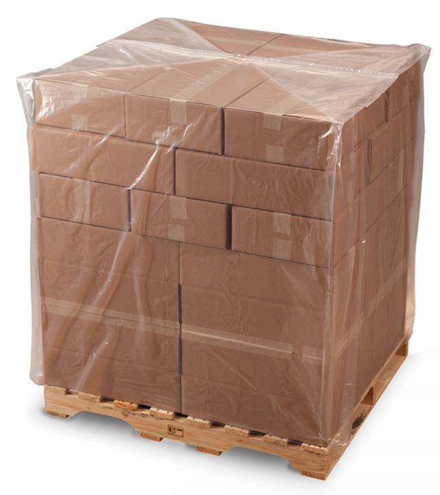

Kaptur foliowy 2400 x 2200 mm
Kaptur w kolorze słomkowym, przeznaczony na paletę standardową, skrzynie i Big Bagi. Przezroczysta folia ułatwia kontrolę zawartości.
- Łączna szerokość
- 2400 mm
- Długość
- 2200 mm
- Grubość
- 60 mikronów
- Materiał / kolor
- LDPE / słomka
- Opakowanie
- 10 sztuk